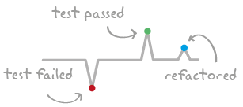

Pulse: peek into your TDD heartbeat.
Pulse is useful when you want to practice your red to green flow. It shows how short those iterations are.
Because we enjoy extracting, inlining, and drawing new interfaces. Pulse can show us our best moves.
Save and export your sessions, they are forever yours to keep. You can always remember those good old days when you and Bob ran the tests 20 times and refactored all that code in only 25 minutes.
Pulse plugs into your testing and refactoring activity to show you a real time chart of your coding session.
The time line shrinks to display all the activities so you can get the big picture.
All code for Pulse is available at https://github.com/sbastn/com.happyprog.pulse
Requires Eclipse Helios (3.6) or greater to run